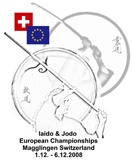
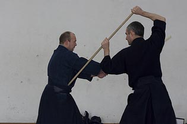
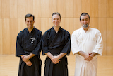
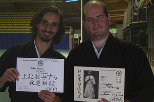

Noticias

2008.12.08
Sucesso nos exames de Iaido
Os alunos do Zenshinkan - ICL António Costa e João Pombo, bem como o aluno do ICP, Pedro Nunes, passaram todos nos respectivos exames de Shodan (1Dan), que decorreram após os campeonatos de Iaido de 2008. A todos, o Zenshinkan - ICL dá os seus parabéns.O Zenshinkan - ICL endereça também os parabéns a todos os nossos amigos budokas do resto da europa que passaram nos seus exames, e deixa um abraço de parabéns muito especial ao Sensei Aad Van de Wijngaart, que tanto nos ajudou a desenvolver o nosso Iaido e Jodo, uma vez que passou com sucesso o seu exame de Rokudan (6 Dan) de Jodo. Para este sucesso, o Sensei Aad Van de Wijngaart contou com a preciosa ajuda do também nosso conhecido Sensei Andy Watson, como o seu parceiro durante o exame.
2008.12.08
Resultados de Portugal nos Europeus de Iaido 2008
A participação portuguesa nos XV Campeonatos Europeus de Iaido teve os seguintes resultados:Na categoria Nidan (2 Dan), João Maia passou a fase de pools, tendo sido eliminado no combate seguinte pelo sueco Jorgen Sjoholm, que viria a conquistar a medalha de bronze. Na categoria Shodan (1 Dan), João Pires passou a fase de pools tendo sido eliminado no combate seguinte pelo belga Sebastian Debroyer, que viria a conquistar a medalha de bronze. Na categoria Mudan (sem graduação), Pedro Nunes passou a fase de pools tendo sido eliminado no combate seguinte pelo holandês Liam Myers, que viria a conquistar a medalha de bronze. Os restantes elementos da comitiva portuguesa não conseguiram passar a fase de pools. Na competição por equipas, Portugal não passou a fase de pools, sendo eliminado pela Hungria e pela Suiça que acabaria por conquistar a medalha de prata.
Resultados completos (em pdf):
Mudan (Não graduados) | Shodan (1 Dan) | Nidan (2 Dan)
Sandan (3 Dan) | Yondan (4 Dan) | Godan (5 Dan) | Rokudan (6 Dan)
Equipas
2008.12.08
Resultados de Portugal nos Europeus de Jodo 2008
A participação portuguesa nos XV Campeonatos Europeus de Jodo teve os seguintes resultados:Na categoria Shodan (2 Dan), João Maia passou a fase de pools, tendo sido eliminado no combate seguinte pelo polaco Piotr Urbanek, que viria a conquistar a medalha de bronze. Os restantes elementos da comitiva portuguesa não conseguiram passar a fase de pools. Na competição por equipas, Portugal obteve um brilhante resultado ao chegar aos quartos de final, eliminado a Austria na fase de pools. A equipa nacional foi depois eliminada pela Itália, que viria a conquistar a medalha de bronze, porém obteve rasgados elogios por parte de várias equipas presentes, tendo em conta que foi a primeira participação de sempre de uma equipa nacional e tendo em conta que o jodo no nosso país tem apenas dois anos de existência.
Resultados completos (em pdf):
Mudan (Não graduados) | Shodan (1 Dan) | Nidan (2 Dan)
Sandan (3 Dan) | Yondan (4 Dan) | Godan (5 Dan) | Equipas
2008.11.07
Selecções Nacionais para os Campeonatos Europeus

Estão definidos os elementos que irão representar o nosso país nos campeonatos europeus de Iaido e Jodo de 2008, a decorrer no início de Dezembro, na localidade suiça de Magglingen. O Zenshinkan - ICL congratula-se por ter alguns elementos nesta comitiva, e deseja desde já as maiores felicidades a toda a comitiva, tanto em Iaido, como em Jodo, não apenas a quem vai competir, mas também a quem vai fazer exame. A comitiva portuguesa é a que se descreve abaixo:Em Iaido:
- Categoria Yondan (4 Dan): Joaquim Mendes (Zenshinkan - ICL)
- Categoria Sandan (3 Dan): Manuel Rodrigues (ICP)
- Categoria Nidan (2 Dan): João Maia (Zenshinkan - ICL) e Sandra Santos (CJIP)
- Categoria Shodan (1 Dan): José Almeida e João Pires (ambos Zenshinkan - ICL)
- Categoria Mudan (Sem graduação): João Pombo (Zenshinkan - ICL) e Pedro Nunes (ICP)
- Equipa Nacional: Joaquim Mendes, Manuel Rodrigues, João Maia, suplente: Sandra Santos
- Team Manager: Manuel Rodrigues
- Team Leader: João Maia
- Coach: Joaquim Mendes
Em Jodo:
- Categoria Nidan (2 Dan): Joaquim Mendes (Zenshinkan - ICL) e Sandra Santos (CJIP)
- Categoria Shodan (1 Dan): João Maia (Zenshinkan - ICL)
- Equipa Nacional: Joaquim Mendes, Sandra Santos, João Maia
- Team Manager: Sandra Santos
- Team Leader: João Maia
- Coach: Joaquim Mendes
Saliente-se que é a primeira vez que Portugal irá competir a nível internacional no que diz respeito ao Jodo, o que demonstra o crescimento que esta disciplina do Budo tem tido no nosso país nos últimos dois anos.
2008.09.07
Estágio de Jodo de Lisboa

É já no fim de semana de 11 e 12 de Outubro que irá decorrer mais um estágio de Jodo, com os nossos conhecidos Sensei Chris Mansfield (Iaido 7o Dan Renshi, Jodo 7o Dan Renshi) e o seu aluno Sensei Andy Watson (Iaido 5o Dan, Jodo 5o Dan). O objectivo é, uma vez mais, divulgar e promover esta disciplina do Budo, que se encontra a dar os primeiros passos em Portugal. Este estágio tem o apoio da APK - Associação Portuguesa de Kendo, e irá decorrer no pavilháo do Clube Nacional de Natação, CNN.Este estágio é aberto aos praticantes de jodo, aos associados da APK, e ao público em geral que pretenda experimentar esta arte marcial pela primeira vez. As inscrições encontram-se abertas, e podem ser feitas preenchendo a ficha de inscrição e enviando-a para jmaia@yahoo.com, ou alternativamente entregando a ficha preenchida durante os treinos de sábado, até ao dia do estágio, inclusive. O custo da inscrição é de 50 Eur.
2008.09.07
Despedida do Sensei Saida
 Depois de vários anos a ensinar, divulgar e promover o Iaido em Portugal, o Sensei Isao Saida irá regressar ao Japão no final do mês de Setembro, desta vez em definitivo.
Depois de vários anos a ensinar, divulgar e promover o Iaido em Portugal, o Sensei Isao Saida irá regressar ao Japão no final do mês de Setembro, desta vez em definitivo.No próximo sábado, dia 13 de Setembro, depois do treino, haverá um almoço de despedida para o qual se convocam todos os elementos do Zenshikan - ICL, e outros iaidokas que se queiram juntar a nós. Será também tirada uma foto de grupo com o Sensei durante o treino, portanto pede-se a todos os que queiram estar presentes para aparecerem no dojo durante o horário de Iaido, mesmo que não vão praticar.
Finalmente, resta-nos a todos agradecer publicamente tudo o que o Sensei fez pela nossa evolução, não apenas como praticantes de budo, mas também como pessoas. Para o Sensei Saida um enorme "domo arigato gozaimashita".
2008.09.07
Resultados do II Taikai de Iaido 2008

Decorreu no sábado, 6 de Setembro, o II Taikai de Iaido de 2008, com a participação de elementos do Zenshinkan - Iaido clube de Lisboa, Iaido Clube de Portugal, e Associação de Kendo do Porto. Foram efectuados combates em três categorias: mudan (não graduados), shodan (1o Dan) e nidan (2o Dan). Os resultados foram os seguintes:Categoria Mudan:
1. António Costa (Zenshinkan - ICL)
2. João Pombo (Zenshinkan - ICL)
3. Pedro Nunes (ICP) e Francisco Beça (AKP)
Categoria Shodan:
1. José Almeida (Zenshikan - ICL)
2. Nuno Guedes (Zenshinkan - ICL)
3. Hugo Boleto (Zenshikan - ICL)
Categoria Nidan:
1. João Maia (Zenshikan - ICL)
2. Pedro Gomes (Zenshinkan - ICL)
3. João Abreu (Zenshikan - ICL)
2008.08.31
II Taikai de Iaido de 2008
Decorre no próximo sábado, 6 de Setembro, o II Taikai de Iaido de 2008, promovido pela APK. Desta vez a organização cabe ao ICL, pelo que se pede que todos os membros do ICL que possam ajudar na preparação do espaço para o torneio, que estejam presentes no dojo da Lapa, no Institudo do Desporto de Portugal, a partir das 09:30 da manhã. Relembra-se que este taikai, para além de promover a prática do Iaido, aproximar os vários dojos existentes em Portugal, serve também para definir o ranking nacional com vista à participação do nosso país nos próximos campeonatos Europeus a decorrer na Suiça em Dezembro.O sorteio dos grupos para o II Taikai de Iaido de 2008 foi já efectuado, e pode ser consultado aqui, juntamente com as respectivas regras.
2008.08.06
Sucesso na participação do ICL no seminário de verão, em Eindhoven

Terminou mais um seminário de verão, desta vez em Eindhoven, na Holanda, e a participação do ICL foi um sucesso. A comitiva japonesa presente foi a seguinte: Kishimoto Chihiro (iaido 8-dan hanshi, jodo 7-dan kyoshi), Ishido Shizufumi (iaido 8-dan hanshi, jodo 8-dan kyoshi), Kiyota Kuniaki (iaido 8-dan kyoshi), Yoshimura Kenichi (iaido 8-dan kyoshi, jodo 7-dan kyoshi). Shoji Keiichi (iaido 7-dan kyoshi, jodo 7-dan kyoshi), Hatakenaka Atsumi (iaido 7-dan kyoshi), Karakama Mitsuo (iaido 6-dan renshi, jodo 5-dan), Nagata Yoko (iaido 5-dan, jodo 3-dan), Igarashi Keiji (fabricante de espadas). Para além desta ilustre comitiva, estiveram presente, como de costume, vários dos senseis mais graduados da Europa, como Chris Mansfield, Len Bean, Louis Vitalis, Rene Van Amersfoort, Aad Van de Wijngaart, Ah Loi Lee, entre outros.No que diz respeito à comitiva do ICL, foi a maior participação de sempre em eventos internacionais (5 membros em Jodo, 8 em Iaido, incluindo o professor, Joaquim Mendes) e todos os alunos propostos a exame tiveram sucesso, tanto em Iaido como em Jodo. Desde já os parabéns a Pedro Gomes e Nuno Guedes, que passaram respectivamente nos exames de Shodan e Ikkyu de Jodo, e a João Pires, Nuno Guedes, Luis Rascão, José Almeida e Hugo Boleto que passaram no exame de Shodan de Iaido.